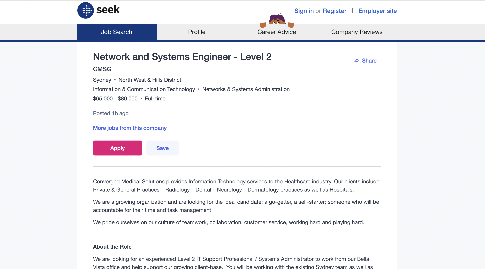

Name: Saqib Mir
Student ID: s3955554
Student email address: s3955554@student.rmit.edu.au
Nationality: I am born in Sydney Australia, however both my parents are born in Bangladesh.
Education: I graduated and finished my HSC at Mitchell High School in 2013. Started studying Bachelor of Engineering
(Civil) at UNSW in 2014. Studied for 2 years before deciding to change degrees to IT at RMIT.
I mainly speak English, but a little bit of Bengali as well, although not proficient.
My hobbies are: I enjoy gaming on pretty much every platform from PS5 to PCs.
I really enjoy building PCs as I have built two for myself so far. I would do more of this but as we all
know the parts are extremely expensive (especially recently.) I also enjoy going out and drinking at bars and
catching up with Uni friends and school friends occasionally. Although not as much recently due to the pandemic.
My interest in IT is mainly due to my fascination with tech and mostly new and upcoming tech. Ever since I was a child,
I had obsessed over pretty much anything electronic I could get my hands on. From my father's first COMPAQ desktop computer
to the old Nokia flip phones. I don’t have any professional experience with IT. My only experience is from watching YouTube
videos from popular tech creators such as Linus Tech Tips. I hope to gain valuable knowledge from RMIT and hopefully graduate
with a Bachelor of IT. I specifically chose RMIT to study at because they offer a fully online Degree. This is especially important
to me as I currently work 4-5 days a week already and would find travelling to Uni very difficult.
Job aspirations
This is one job that I wish to gain employment in. Network and systems engineer at Converged Medical Solutions
